| sleep_debt | screen_time | unlock | message | message_q | screen_com | screen_nocom | sms | mms | length | bytes | sc_com_pct | screen_com_level2 | com_level | ||
|---|---|---|---|---|---|---|---|---|---|---|---|---|---|---|---|
| count | 114762.00 | 114762.00 | 114762.00 | 114762.00 | 114762.00 | 114762.00 | 114762.00 | 114762.00 | 114762.00 | 114762.00 | 114762.00 | 114762.00 | 114762.00 | 114762.00 | 114762.00 |
| mean | 50.70 | 39.27 | 13.91 | 20.54 | 1.45 | 12.48 | 26.79 | 19.31 | 0.73 | 0.50 | 675.84 | 630.28 | 27.66 | 0.26 | 0.26 |
| std | 102.28 | 38.62 | 14.26 | 41.73 | 1.49 | 25.25 | 36.43 | 40.26 | 3.11 | 6.77 | 1706.43 | 3575.41 | 41.55 | 0.44 | 0.44 |
| min | -778.00 | 0.00 | 0.00 | 0.00 | 0.00 | 0.00 | 0.00 | 0.00 | 0.00 | 0.00 | 0.00 | 0.00 | 0.00 | 0.00 | 0.00 |
| 5% | -110.00 | 0.00 | 0.00 | 0.00 | 0.00 | 0.00 | 0.00 | 0.00 | 0.00 | 0.00 | 0.00 | 0.00 | 0.00 | 0.00 | 0.00 |
| 10% | -69.00 | 0.00 | 0.00 | 0.00 | 0.00 | 0.00 | 0.00 | 0.00 | 0.00 | 0.00 | 0.00 | 0.00 | 0.00 | 0.00 | 0.00 |
| 15% | -45.00 | 0.00 | 0.00 | 0.00 | 0.00 | 0.00 | 0.00 | 0.00 | 0.00 | 0.00 | 0.00 | 0.00 | 0.00 | 0.00 | 0.00 |
| 20% | -26.00 | 3.70 | 2.00 | 0.00 | 0.00 | 0.00 | 0.00 | 0.00 | 0.00 | 0.00 | 0.00 | 0.00 | 0.00 | 0.00 | 0.00 |
| 25% | -11.00 | 8.23 | 4.00 | 0.00 | 0.00 | 0.00 | 0.00 | 0.00 | 0.00 | 0.00 | 0.00 | 0.00 | 0.00 | 0.00 | 0.00 |
| 50% | 48.00 | 29.23 | 11.00 | 3.00 | 1.00 | 0.00 | 11.13 | 3.00 | 0.00 | 0.00 | 39.00 | 0.00 | 0.00 | 0.00 | 0.00 |
| 75% | 110.00 | 58.32 | 20.00 | 23.00 | 3.00 | 12.98 | 40.98 | 21.00 | 0.00 | 0.00 | 737.00 | 0.00 | 61.38 | 1.00 | 1.00 |
| 90% | 172.00 | 94.93 | 31.00 | 61.00 | 4.00 | 44.95 | 79.25 | 57.00 | 2.00 | 0.00 | 2047.00 | 1281.11 | 100.00 | 1.00 | 1.00 |
| 95% | 222.00 | 120.68 | 40.00 | 95.00 | 4.00 | 68.22 | 106.88 | 91.00 | 4.00 | 0.00 | 3221.95 | 3055.67 | 100.00 | 1.00 | 1.00 |
| max | 479.00 | 179.99 | 817.00 | 1015.00 | 4.00 | 179.99 | 179.99 | 1009.00 | 278.00 | 327.00 | 297239.00 | 266279.66 | 100.00 | 1.00 | 1.00 |
1 Test of U-Shaped Relationship
In this section, we discuss whether the U-shaped relationship is caused by outliers in the data. First of all, we take a look at the descriptive statistics of the main variables:
1.1 Treatment of Outliers
1.1.1 Raw Data
We observe that there are some outliers in the data. For example, the maximum value of sleep debt is about 8 hours (479 minutes), suggesting that one did not sleep at all on that day. The minimal value of sleep debt is -12.96 hours (-778 minutes), suggesting that one slept for 20.96 hours, which is quite unusual. Moreover, the maximum screen time is 179.99 minutes; the maximum message is 1015 and the maximum unlock actions is 817 times, which could barely happen.
Recall the model-free analysis about the relationship among sleep debt, screen time and message:
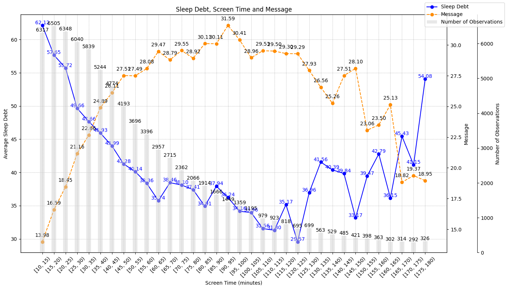
The margins plot based on fixed effect model with the above data is as follows:
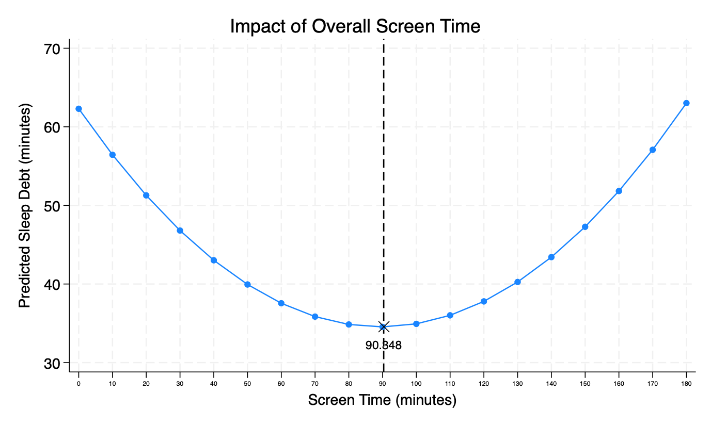
Considering the existence of outliers, the upwarding part of the U-shape might be caused by the outliers at the tail (the rightmost few bars). To check whether the U-shaped relationship is caused by outliers, we reviewed the literature about the treatement of outliers and identified the following outlier treatment strategies: winsorization, trimming, and interquartile range method (Leone, Minutti-Meza, and Wasley 2019; Mitton 2022; Vinutha, Poornima, and Sagar 2018 ).
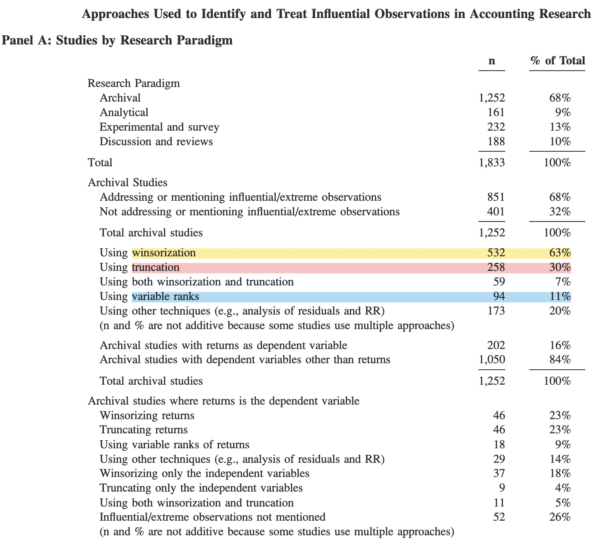
1.1.2 Winsorization
Winsorization replaces the extreme values with values at certain quartile cutoffs. The most commonly used cutoffs in business research is 1st and 99th percentiles, 5th/95th and 10th/90th are used as well (Mitton 2022). We winsorize the continuous variables in our specification at cutoffs of 1st/99tth, 2.5th/97.5th, 5th/95th and 10th/90th. The following table shows the descriptive statistics after winsorization at cutoffs of 5th/95th.
| sleep_debt | screen_time | unlock | message | |
|---|---|---|---|---|
| count | 114762.00 | 114762.00 | 114762.00 | 114762.00 |
| mean | 50.34 | 38.09 | 13.20 | 17.25 |
| std | 87.80 | 35.42 | 11.44 | 26.84 |
| min | -111.00 | 0.00 | 0.00 | 0.00 |
| 25% | -11.00 | 8.23 | 4.00 | 0.00 |
| 50% | 48.00 | 29.23 | 11.00 | 3.00 |
| 75% | 110.00 | 58.32 | 20.00 | 23.00 |
| max | 224.00 | 121.46 | 40.00 | 95.00 |
We can find that range of sleep debt changes to [-111, 224] minutes from [-778, 479] minutes; the maximum screen time decreased to 121.46 minutes from 179.99 minutes; the maximum unlock decreased to 40 from 817; the maximum message decreased to 95 from 1015, which are relatively normal. The following table shows the descriptive statistics with winsorization at cutoffs of 1st/99tth, 2.5th/97.5th, 5th/95th and 10th/90th.
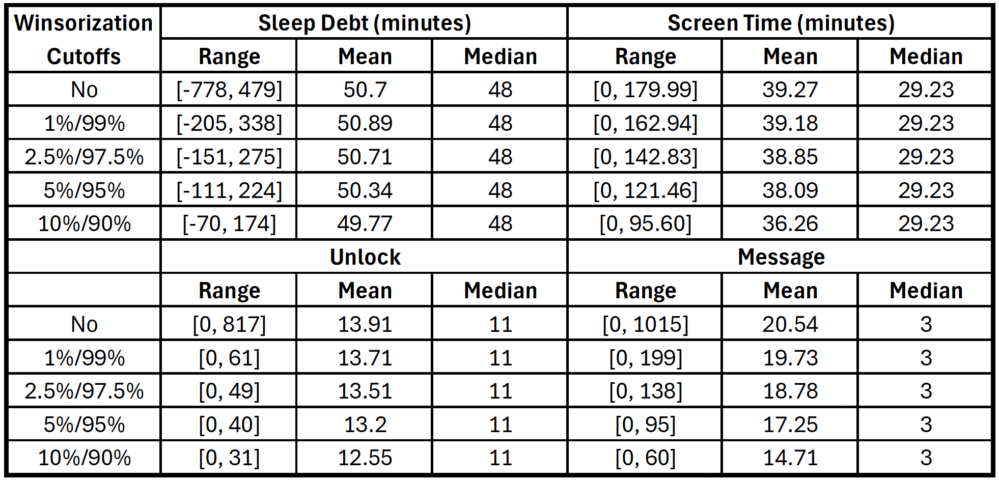
1.1.3 Trimming
Trimming deals with the outliers by simply dropping the observations with extreme values. Different from winsorization, trimming reduces the number of observations. We trim the data based on screen time at cutoffs of 1st/99tth, 2.5th/97.5th, 5th/95th and 10th/90th.
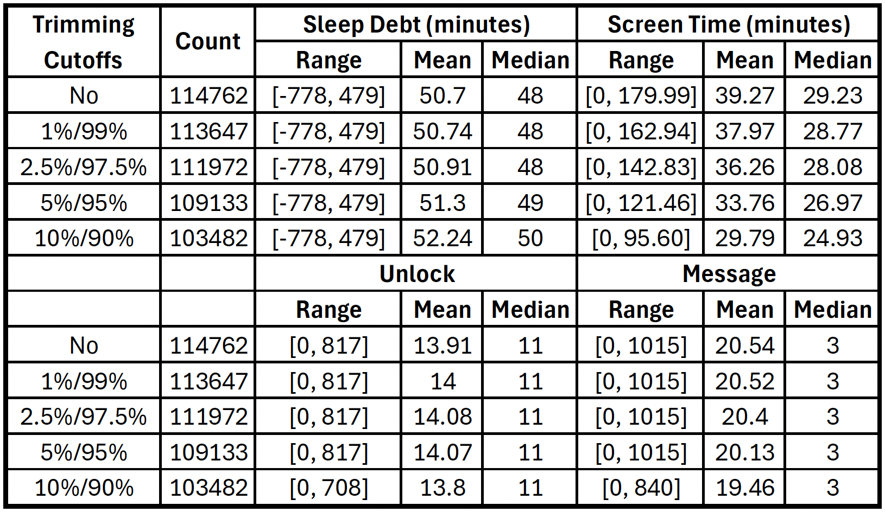
1.1.4 Variable Ranks
The interquartile range (IQR) method is a variable rank strategy that rules out the outliers by calculating the upper and lower fence based on quartile values (link).
Interquartile Range (IQR)=Q3-Q1
Upper fence = Q3+1.5×IQR
Lower fence = Q1-1.5×IQR
Recall the descriptive statistics of raw data, the IQR for screen time = Q3-Q1 = 58.32 - 8.23 = 50.09 minutes. Thus, the upper and lower fences for screen time are calculated as:
Upper fence = 58.32+1.5×50.09 = 133.455 minutes
Lower fence = 8.23-1.5×50.09 = -66.891 minutes
Considering that screen time should a non-negative value, the range for screen time is [0, 133. 455] minutes. The descriptive statistics for the main variables are as follows:
| sleep_debt | screen_time | unlock | message | |
|---|---|---|---|---|
| count | 110915.00 | 110915.00 | 110915.00 | 110915.00 |
| mean | 51.00 | 35.29 | 14.09 | 20.29 |
| std | 102.17 | 32.64 | 14.39 | 40.81 |
| min | -778.00 | 0.00 | 0.00 | 0.00 |
| 25% | -11.00 | 7.50 | 4.00 | 0.00 |
| 50% | 49.00 | 27.68 | 11.00 | 3.00 |
| 75% | 110.00 | 54.45 | 20.00 | 23.00 |
| max | 479.00 | 133.43 | 817.00 | 1015.00 |
We then estimate the sleep debt based on the data after winsorization, trimming and IQR method with the fixed effect model.
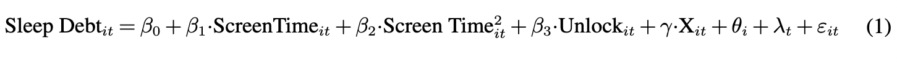
The results are as follows:
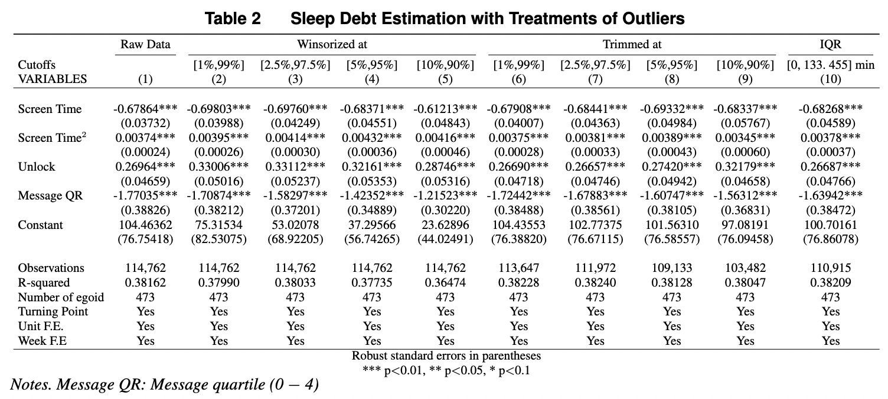
The estimated coefficients for screen time and its quadratic terms are significant suggesting that the existence of turning points. The following figure visualize the margin plot based on the above outlier treatment strategies:
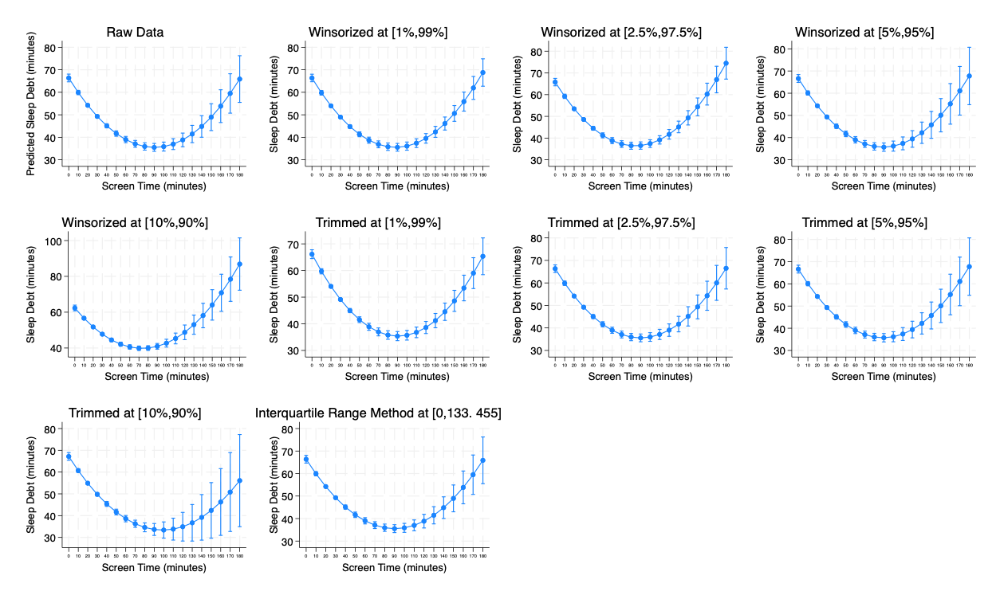
The margins plot supports the existence of U-shaped relationship and the turning point are within the range of measurement windows (180 minutes).
1.1.5 Outlier Treatment Based on Individual Average
1.1.5.1 Screen Time
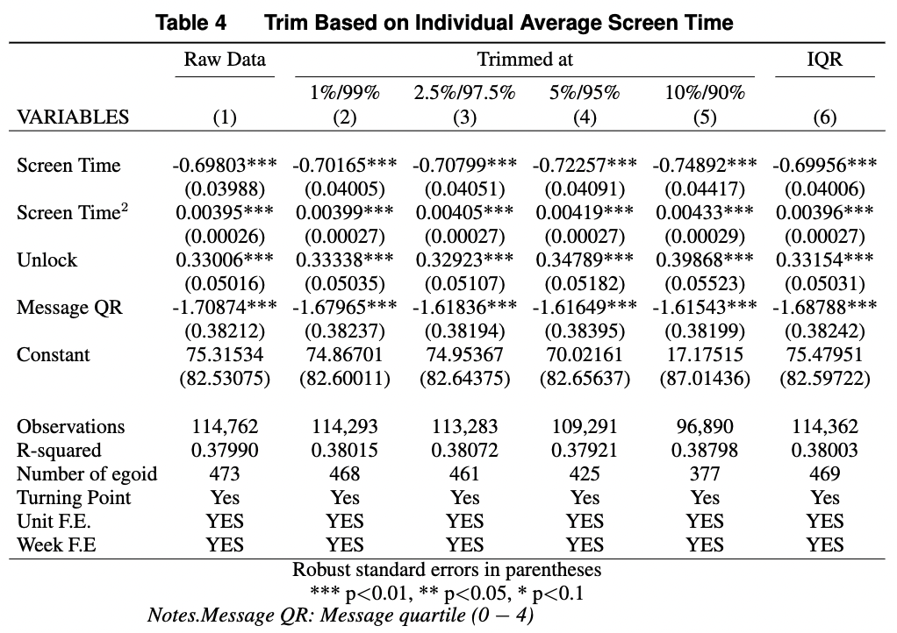
1.1.5.2 Deviation Measure of Screen Time
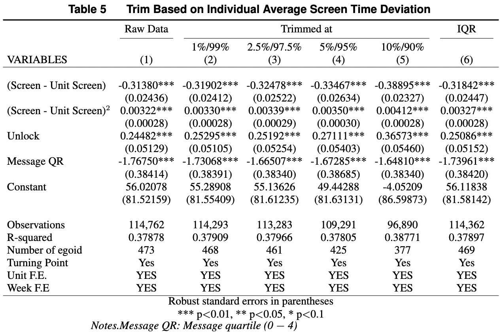
1.2 Spline Regressions
Spline regressions estimate the coefficients of screen time on sleep debt piecewisely. Spline regressions are widely used to test the existence of U- and inverted U-Shaped relationships (Kesavan, Staats, and Gilland 2014; Huang et al. 2023; Tan and Netessine 2019; Xu, Tan, and Netessine 2022; Zou et al. 2023). For example, the following equation estimated the coefficients with 4 knots.
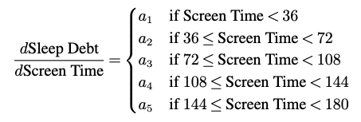
We vary the number of knots from 1 to 5 and obtained the following results:
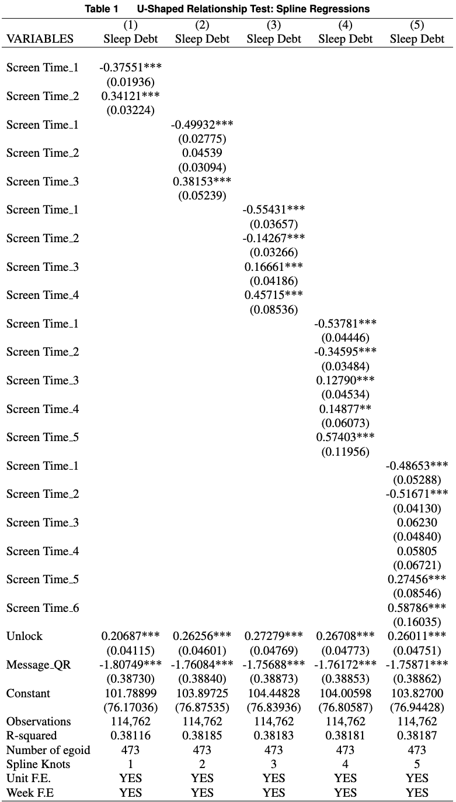
We observe that the estimated coefficient transit from negative to positive regardless of the number of spline knots. The following figure visualize the transition for the spline regression with 5 knots, which supports the U-Shaped relationship.
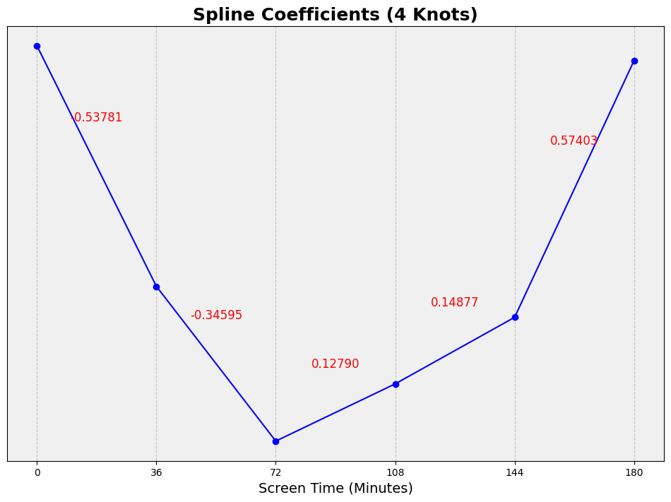
1.3 Addition Checks
In addition to the above checks for U-Shaped relationships, (Haans, Pieters, and He 2016) sgguested the following checks:
The turning point should be within the range of observations. We can observe that both the turning points above are within the measurement window.
Theoretical support for the U-shaped relationship. Moderate smartphone use makes users relax and reduces sleep debt. After the turning point, the crowding out effect of screen time and blue light effects dominate the impact of screen time and increases sleep debt.
The above checks support the U-Shaped relationship in our main specification.
2 Model Selection.
2.1 Evaluation of Model Fit
In this section, we compare the performance of various models based on Akaike information criterion (AIC) and Bayesian information criterion (BIC) (Karhade and Qi Dong 2021)
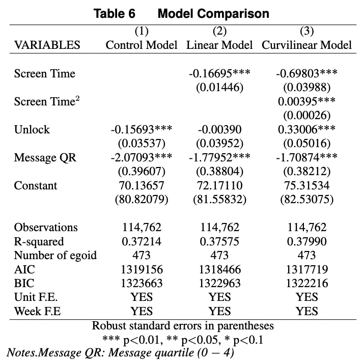
Based on the estimation results above, the AIC and BIC values in the curvilinear model are smaller than those of the control and linear models, suggesting that the curvilinear model outperforms the control and linear models.
2.2 Deviation Measure of Screen Time
In this section, we consider individuals’ different levels of smartphone use or use habits since individuals’ dependence levels on smartphone may differ. For example, one’s smartphone use amount may be systematically above the population’s average while his use level is below her/his own use level on a particular day.
To address this concern, we create a deviation measure for screen time: Screen Time Deviation = Screen Time - Unit Average Screen Time(Ho et al. 2017; Karhade and Qi Dong 2021)
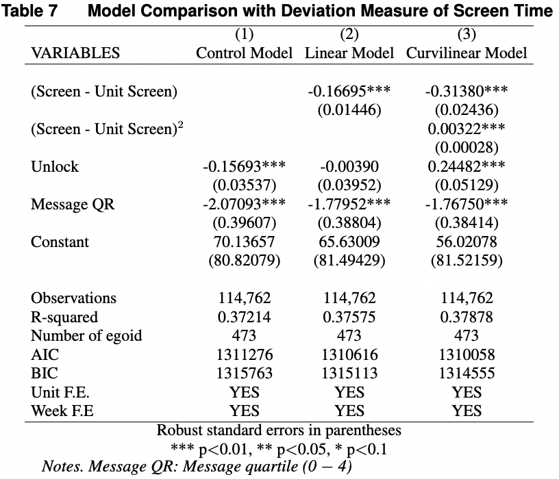
The estimation results above support the existence of U-shaped relationship and curvilinear model outperforms the control and linear models.
3 Endogeneity
3.1 Introduction
In the blog selection issues, we discussed the confounders that may threaten the causal relationship in the study. In this section, we discuss the different types of causes of endogeneity and their corresponding remedy strategies . Overall, there are four types of causes of endogeneity: omitted variable, simultaneity, measurement Error, and selection (of treatment and/or into sample)(Hill et al. 2021).
| Endogeneity Cause | Description | Threaten Lvel |
|---|---|---|
| Omitted Variable | There could be factors that are
|
High |
| Simultaneity | Smartphone users play smartphones as they cannot fall asleep. | High |
| Measurement Error | Since subjects in the study wear the same devices (Fitbit) and primarly use same phones (iPhones), the measurement errors are supposed to be systematic if there were. This might not impact the causal effects of our argument. | Low |
| Selection (of treatment and/or into sample) | For the Nethealth project, students were informed that the research team would collect their social networks, physical activity and sleep obtained from Fitbit devices, physical and mental health, social-psychological states, tastes and various self-reported behaviours, and demographics and background traits through surveys. There seems not likely to be significant selection bias in terms of sleep quality and smartphone use amount when recruiting students. | Low |
3.2 Dynamic Panel Model
One’s sleep debt today may be influenced by the sleep debt yesterday and even the sleep debt of previous few days. For example, an individual may need to sleep more and reduce phone use to make up sleep today if she/he had significant high sleep debt yesterday.

To control for the dynamic endogeneity, we introduce the dynamic panel model by adding the lagged dependent variables:
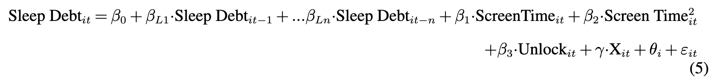
However, adding lagged dependent variables may introduce extra endogeneity as lagged dependent variables may be correlated with error term(Nickell 1981). To overcome this issue, we apply the Arellano–Bond estimator, which is a general method of moments (GMM) estimator based on dynamic panel data with first differences (Huang et al. 2023). Arellano–Bond estimator uses the lagged variables as instruments to address the endogeneity bias. For example, suppose that the sleep debt today is affected by the sleep debt yesterday but not the one of the day before yesterday. In another word, \(Sleep\ Debt_{i,t-2}\) only affect \(Sleep\ Debt_{i,t}\) by affecting \(Sleep\ Debt_{i,t-1}\). Thus, \(Sleep\ Debt_{i,t-2}\) can work as an instrument variable for \(Sleep\ Debt_{i,t-1}\), namely “internal instrument” (Roodman 2009) which is shown in the following figure.
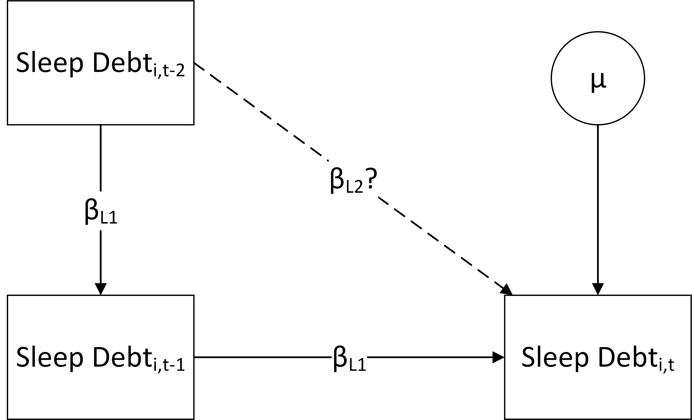
The situation becomes complicated if the \(Sleep\ Debt_{i,t-2}\) can directly affect \(Sleep\ Debt_{i,t}\), as shown below:
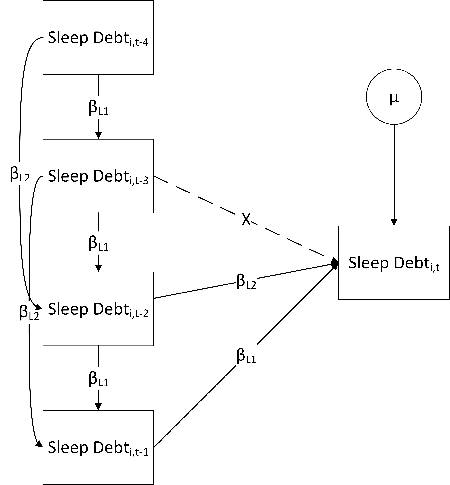
We can identify the \(Sleep\ Debt_{i,t-n}\) that does not affect \(Sleep\ Debt_{i,t}\) directly and take it as instrument for variables from \(Sleep\ Debt_{i,t-1}\) to \(Sleep\ Debt_{i,t-n-1}\). The Arellano–Bond test checks the exogeneity assumption and can tell us whether the lagged variables are correlated with error term. A Sargan test tells us whether the instruments are correctly specified.
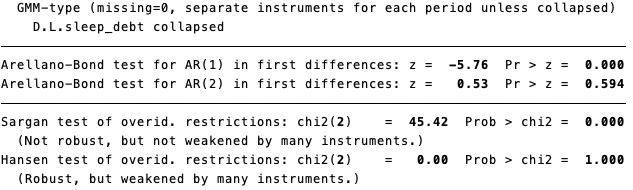
The Arellano–Bond test above for AR (1) is significant while AR(2) is not, indicating that the lagged one period of sleep debt is a significant estimator for the current sleep debt. We include lagged (1) sleep debt into our main estimation and obtained the following results:
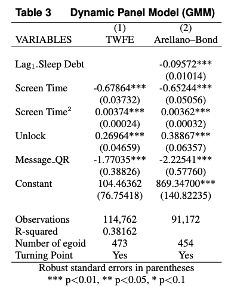
Arellano-Bond test for AR(1) in first differences:
z = -5.76
p-value = 0.000
Interpretation: This test checks for the presence of first-order serial correlation. The null hypothesis of no first-order serial correlation is rejected because the p-value is less than 0.05. This suggests that there is first-order serial correlation in the differenced errors, which is expected in first-differenced models.
Arellano-Bond test for AR(2) in first differences:
z = 0.53
p-value = 0.594
Interpretation: This test checks for the presence of second-order serial correlation. The null hypothesis of no second-order serial correlation cannot be rejected because the p-value is greater than 0.05. This suggests that there is no second-order serial correlation in the differenced errors.
Sargan test of overidentifying restrictions:
chi2(2) = 45.42
p-value = 0.000
Interpretation: This test checks the overall validity of the instruments. The null hypothesis is that the instruments are valid (i.e., they are not correlated with the error term). The p-value is less than 0.05, so the null hypothesis is rejected, indicating that the instruments may be invalid.
Hansen test of overidentifying restrictions:
chi2(2) = 0.00
p-value = 1.000
Interpretation: Similar to the Sargan test, but robust to heteroskedasticity. The p-value is much greater than 0.05, so the null hypothesis cannot be rejected, indicating that the instruments are valid.
We find that one minute increase in the sleep debt of the previous day can lead to 0.095 minute decrease in the current sleep debt. We also observe that the estimation for screen time terms are significant, supporting the existence of U-shaped relationship between sleep debt and screen time.
The above process shows how GMM address endogeneity caused by omitted variable. In addition, The GMM model removes other reverse causality by “internally transforming the data”-taking the first difference of variables in the model(Ullah, Akhtar, and Zaefarian 2018).
References
Haans, Richard F. J., Constant Pieters, and Zi-Lin He. 2016. “Thinking about U: Theorizing and Testing U- and Inverted U-Shaped Relationships in Strategy Research.” Strategic Management Journal 37 (7): 1177–95. https://doi.org/10.1002/smj.2399.
Hill, Aaron D., Scott G. Johnson, Lindsey M. Greco, Ernest H. O’Boyle, and Sheryl L. Walter. 2021. “Endogeneity: A Review and Agenda for the Methodology-Practice Divide Affecting Micro and Macro Research.” Journal of Management 47 (1): 105–43. https://doi.org/10.1177/0149206320960533.
Ho, Joanna, Feng Tian, Anne Wu, and Sean Xin Xu. 2017. “Seeking Value Through Deviation? Economic Impacts of IT Overinvestment and Underinvestment.” Information Systems Research 28 (4): 850–62. https://doi.org/10.1287/isre.2017.0710.
Huang, Herbie, Nur Sunar, Jayashankar M. Swaminathan, and Rahul Roy. 2023. “Do Noisy Customer Reviews Discourage Platform Sellers? Empirical Analysis of an Online Solar Marketplace.” Manufacturing & Service Operations Management 25 (6): 2195–215. https://doi.org/10.1287/msom.2021.0104.
Karhade, Prasanna, and John Qi Dong. 2021. “Information Technology Investment and Commercialized Innovation Performance: Dynamic Adjustment Costs and Curvilinear Impacts.” MIS Quarterly 45 (3): 1007–24. https://doi.org/10.25300/MISQ/2021/14368.
Kesavan, Saravanan, Bradley R. Staats, and Wendell Gilland. 2014. “Volume Flexibility in Services: The Costs and Benefits of Flexible Labor Resources.” Management Science 60 (8): 1884–1906. https://doi.org/10.1287/mnsc.2013.1844.
Leone, Andrew J., Miguel Minutti-Meza, and Charles E. Wasley. 2019. “Influential Observations and Inference in Accounting Research.” The Accounting Review 94 (6): 337–64. https://doi.org/10.2308/accr-52396.
Mitton, Todd. 2022. “Methodological Variation in Empirical Corporate Finance.” Edited by Itay Goldstein. The Review of Financial Studies 35 (2): 527–75. https://doi.org/10.1093/rfs/hhab030.
Nickell, Stephen. 1981. “Biases in Dynamic Models with Fixed Effects.” Econometrica 49 (6): 1417–26. https://doi.org/10.2307/1911408.
Roodman, David. 2009. “How to Do Xtabond2: An Introduction to Difference and System GMM in Stata.” The Stata Journal 9 (1): 86–136. https://doi.org/10.1177/1536867X0900900106.
Tan, Tom Fangyun, and Serguei Netessine. 2019. “When You Work with a Superman, Will You Also Fly? An Empirical Study of the Impact of Coworkers on Performance.” Management Science 65 (8): 3495–3517. https://doi.org/10.1287/mnsc.2018.3135.
Ullah, Subhan, Pervaiz Akhtar, and Ghasem Zaefarian. 2018. “Dealing with Endogeneity Bias: The Generalized Method of Moments (GMM) for Panel Data.” Industrial Marketing Management 71 (May): 69–78. https://doi.org/10.1016/j.indmarman.2017.11.010.
Vinutha, H. P., B. Poornima, and B. M. Sagar. 2018. “Detection of Outliers Using Interquartile Range Technique from Intrusion Dataset.” In, edited by Suresh Chandra Satapathy, Joao Manuel R. S. Tavares, Vikrant Bhateja, and J. R. Mohanty, 511–18. Singapore: Springer. https://doi.org/10.1007/978-981-10-7563-6_53.
Xu, Yuqian, Tom Fangyun Tan, and Serguei Netessine. 2022. “The Impact of Workload on Operational Risk: Evidence from a Commercial Bank.” Management Science 68 (4): 2668–93. https://doi.org/10.1287/mnsc.2021.4019.
Zou, Fan, Yan Dong, Sining Song, and Manus Rungtusanatham. 2023. “Product Recalls and Supply Base Innovation.” Manufacturing & Service Operations Management 25 (5): 1931–46. https://doi.org/10.1287/msom.2023.1213.